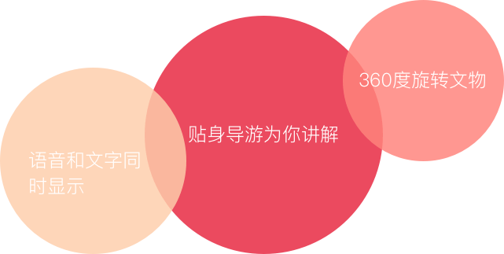
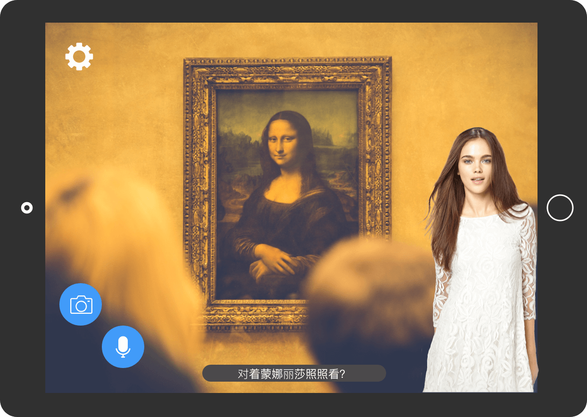

MUGA - 智能博物馆导览
旨在为用户解决参观博物馆、景区等地方时进行导览,通过语音方式询问问题，以文字和语音输出答案，智慧导览降低了人工成本和时间，提高了导览效率。
从博物馆出来，你记得看了什么吗？
博物馆里的每一件文物都承载一段故事，但总是看了后面忘了前面，大多只是走马观花，文物的有些细节看不到（例如底部），看后一头雾水。岂不是白看了？
你是否遇到这样的问题...

" 看不到底部的字啊。。。 " 有些标明于年代的记号位于文物底部，用户难以看到。
" 请个解说员好贵" 昂贵的费用让非团体的市民觉得不划算，志愿者讲解只在特定时间段进行。
" 听完一段语音太久了，重新听又得从头开始" 扫二维码收听语音解说但每条语音时间较长（不少于20秒）
如果有一个app。。。

那么就是MUGA
简单易懂的界面

简洁易操作并且无过多干扰的界面，让您专注于解读文物的过去。
拍照1-2-3
点击拍照键，将文物对准在框内，即可读出对应资料，并且可以360度旋转文物模型。
语音问答
长按语音键说出问题，回答你的疑问。